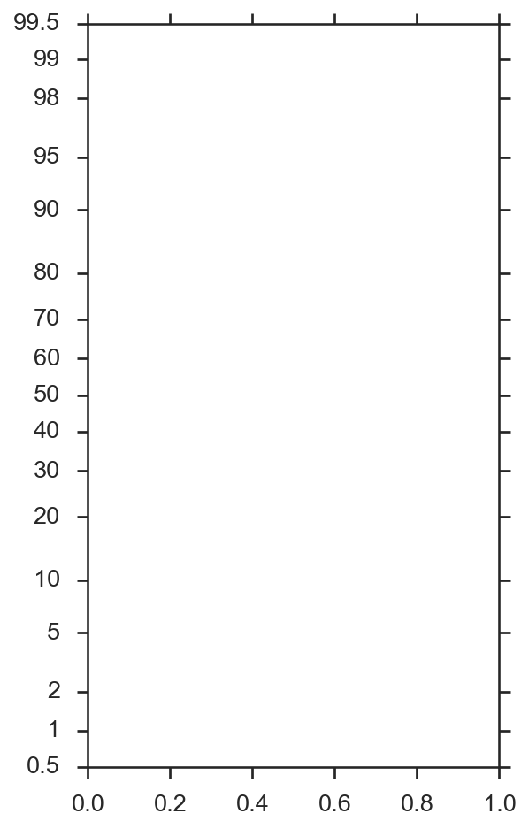

TheprobscaleAPI
probscale API Reference¶
-
class
probscale.probscale.ProbScale(axis, **kwargs)[source]¶ Bases:
matplotlib.scale.ScaleBaseA probability scale for matplotlib Axes.
Parameters: axis : a matplotlib axis artist
The axis whose scale will be set.
dist : scipy.stats probability distribution, optional
The distribution whose ppf/cdf methods should be used to compute the tick positions. By default, a minimal implimentation of the
scipy.stats.normclass is used so that scipy is not a requirement.Examples
The most basic use:
>>> from matplotlib import pyplot >>> import probscale >>> fig, ax = pyplot.subplots(figsize=(4, 7)) >>> ax.set_ylim(bottom=0.5, top=99.5) >>> ax.set_yscale('prob')
-
name= 'prob'¶
-